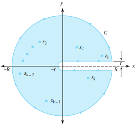
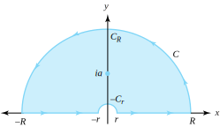

We now show how to evaluate certain improper real integrals involving the integrand \(x^{\alpha}\frac{P(x)}{Q x)}\text{.}\) The complex function \(z^{\alpha}\) is multivalued, so we must first specify the branch to be used.
Let \(\alpha\) be a real number with \(0\lt \alpha \lt 1\text{.}\) In this section we use the branch of \(z^{\alpha}\) corresponding to the branch of the logarithm \(\log_0\) \big(see Equation (5.2.11)\big) as follows:
where \(z=re^{i\theta}\ne 0\) and \(0\lt \theta \le 2\pi\text{.}\) Note that this is not the traditional principal branch of \(z^{a}\) and that, as defined, the function \(z^{a}\) is analytic in the domain \(\{re^{i\theta} : r>0, \; 0 \lt \theta \lt 2\pi\}\text{.}\)
Theorem8.6.1.
Let \(P\) and \(Q\) be polynomials of degree \(m\) and \(n\text{,}\) respectively, where \(n \ge m+2\text{.}\) If \(Q(x) \ne 0\text{,}\) for \(x>0, \; Q\) has a zero of order at most \(1\) at the origin, and \(f(z) = \frac{z^{\alpha}P(z)}{Q(z)}\text{,}\) where \(0\lt \alpha \lt 1\text{,}\) then
where \(z_1, \, z_2, \, \ldots, \, z_k\) are the nonzero poles of \(\frac{{P}}{Q}\text{.}\)
Proof.
Let \(C\) denote the simple closed positively oriented contour that consists of the portions of the circles \(C_r(0)\) and \(C_R(0)\) and the horizontal segments joining them, per Figure 8.6.2.

Figure8.6.2.Contour \(C\) encloses the nonzero poles \(z_, \ z_2, \ \ldots, \ z_k\) of \(\frac{P}Q\)
We select a small value of \(r\) and a large value of \(R\) so that the nonzero poles \(z_1, \, z_2, \, \ldots, \, z_k\) of \(\frac{P}{Q}\) lie inside \(C\text{.}\) Using the residue theorem, we write
If we let \(r \to 0\) in Equation (8.6.2), the integrand \(f(z)\) on the upper horizontal line of Figure 8.6.2 approaches \(\frac{x^{\alpha}P(x)}{Q(x)}\text{,}\) where \(x\) is a real number; however, because of the branch we chose for \(z^{a}\) (see Equation (8.6.1)), the integrand \(f(z)\) on the lower horizontal line approaches \(\frac{x^{\alpha}e^{i\alpha 2\pi}P(x)}Q(x)\text{.}\) Therefore
It is here that we need the function \(Q\) to have a zero of order at most 1 at the origin. Otherwise, the first two integrals on the right side of Equation (8.6.3) would not necessarily converge. Combining this result with Equation (8.6.2) gives
The argument is essentially the same as that used to establish Equation (8.3.5), and we omit the details. If we combine Equations (8.6.4) and (8.6.5) and let \(R \to \infty\text{,}\) we arrive at the desired result.
Example8.6.3.
Evaluate P.V. \(\int_0^{\infty}\frac{x^{\alpha}}{x(x+1)}\,dx\text{,}\) where \(0\lt a\lt 1\text{.}\)
Solution.
The function \(f(z) =\frac{z^{a}}{z(z+1)}\) has a nonzero pole at the point \(-1\text{,}\) and the denominator has a zero of order at most 1 (in fact, exactly 1) at the origin. Using Theorem 8.6.1, we compute
where \(z=re^{i\theta}\ne 0\) and \(-\frac{\pi}{2}\lt \theta \le \frac{3\pi}{2}\text{.}\) The path \(C\) of integration will consist of the segments \([-R,-r ]\) and \([r,R]\) of the \(x\)-axis together with the upper semicircles \(C_{r}:z=re^{i\theta}\) and \(C_R:z=Re^{i\theta}\text{,}\) for \(0 \le \theta \le \pi\text{,}\) as shown in Figure 8.6.5.

Figure8.6.5.The contour \(C\) for the integrand \(f(z) = \frac{\mathrm{\log}_{-\frac{\pi}{2}}z}{z^2+a^2}\)
We chose the branch \(\log_{-\frac{\pi}{2}}\) because it is analytic on \(C\) and its interior, hence so is the function \(f\text{.}\) This choice enables us to apply the residue theorem properly (see the hypotheses of Theorem 8.1.5), and we get
and L’Hôpital’s rule yields \(\lim\limits_{R \to \infty}\int_{C_R}f(z)r\,dz=0\text{.}\) Engaging in a similar computation shows that \(\lim\limits_{r \to 0^{+}}\int_{c_{r}}f(z)\,dz=0\text{.}\) We use these results when we take limits Equations (8.6.6) to get
The theory of this section is not purely esoteric. Many applications of contour integrals surface in government and industry worldwide. Several years ago, for example, a briefing was given at the Korean Institute for Defense Analysis (KIDA) in which a sophisticated problem was analyzed by means of a contour integral whose path of integration was virtually identical to that given in Figure 8.6.2.
Carry out the following computations: \begin{enumerate}
(k)
For \(f(z)=\frac{z^\frac{1}{3}}{z^3(z+1)}\text{,}\) show that \(\mathrm{Res}[f,-1]=-\frac{1}{2}-\frac{\sqrt{3}}{2}i\text{.}\)
(l)
Use part (a) and \(\alpha=\frac{1}{3}\) to verify the computation \(\frac{2\pi i}{1-e^{i \alpha 2\pi}}\mathrm{Res}[f,-1] = \frac{2\sqrt{3}}{3}\pi\text{.}\)
(m)
Can you conclude that P.V. \(\int_0^{\infty}\frac{x^\frac{1}{3}}{x^3(x+1)}\,dx=\frac{2\sqrt{3}}{3}\pi\text{?}\) Justify your answer.
2.
Carry out the following computations:
(a)
For \(f(z)=\frac{z^\frac{4}{3}}{z+1}\text{,}\) show that \(\mathrm{Res}[f,-1]=-\frac{1}{2}-\frac{\sqrt{3}}{2}i\text{.}\)
(b)
Use part (a) and \(\alpha=\frac{4}{3}\) to verify the computation \(\frac{2\pi i}{1-e^{i\alpha2\pi}}\mathrm{Res}[f,-1] = \frac{2\sqrt{3}}{3}\pi\text{.}\)
(c)
Can you conclude that P.V. \(\int_0^{\infty}\frac{x^\frac{4}{3}}{x+1}\,dx=\frac{2\sqrt{3}}{3}\pi\text{?}\) Justify your answer.
Solution.
No. The hypotheses of Theorem 8.6.1 are not satisfied. Explain why they are not.
P.V. \(\int_0^{\infty}\frac{x^\frac{1}{3}\ln x}{x^2+1}\,dx\) and P.V. \(\int_0^{\infty}\frac{x^\frac{1}{3}}{x^2+1}\,dx\text{.}\)
\hint{Use the complex integrand \(f(z)=\frac{z^\frac{1}{3}\mathrm{Log} z}{z^2+1}\text{.}\)}
8.
P.V. \(\int_0^{\infty}\frac{\ln (1+x)}{x^{1+a}}\,dx\text{,}\) where \(0\lt a\lt 1\text{.}\)
Solution.
\(\frac{\pi}{a\sin \pi a}\text{.}\)
9.
P.V. \(\int_0^{\infty}\frac{\ln x}{(x+a)^2}\,dx\text{,}\) where \(a>0\text{.}\)
10.
P.V. \(\int_{-\infty}^{\infty}\frac{\sin x}{x}\,dx\text{.}\) \hint{Use the integrand \(f(z) =\frac{\exp(iz)}{z}\) and the contour \(C\) in Figure 8.6.2. Let \(r \to 0\) and \(R \to \infty\text{.}\)}
Solution.
\(\pi\text{.}\)
11.
P.V. \(\int_{-\infty}^{\infty}\frac{\sin^2x}{x^2}\,dx\) . \hint{Use the integrand \(f(z) =\frac{1-\exp (i2z)}{z^2}\) and the contour \(C\) in Figure 8.8. Let \(r \to 0\) and \(R \to \infty\text{.}\)}
12.
The Fresnel integrals \(\int_0^{\infty}\cos(x^2)\,dx\) and \(\int_0^{\infty}\sin (x^2)\,dx\) are important in the study of optics. Use the integrand \(f(z)=\exp(-z^2)\) and the contour \(C\) shown in Figure 8.6.7, and let \(R \to \infty\) to get the value of these integrals. Use the fact from calculus that \(\int_0^{\infty}e^{-x^2}dx=\sqrt{\frac{\pi}{2}}\text{.}\)